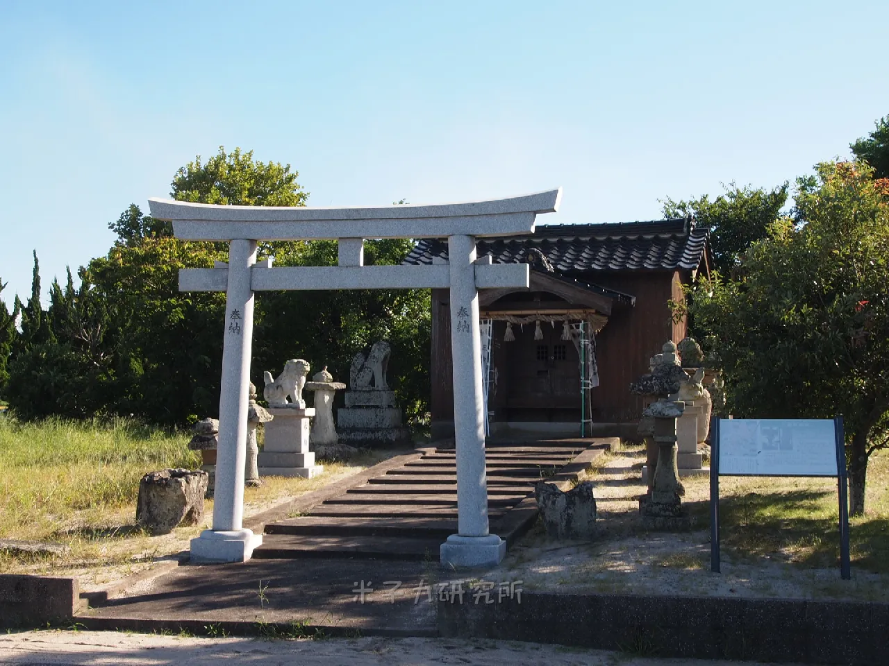
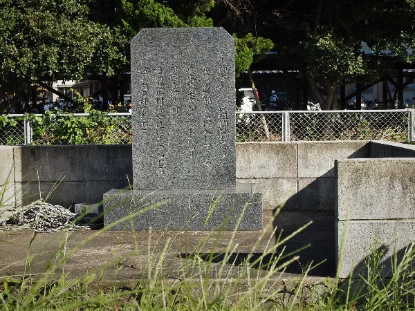
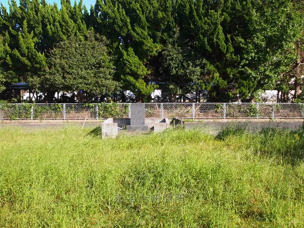
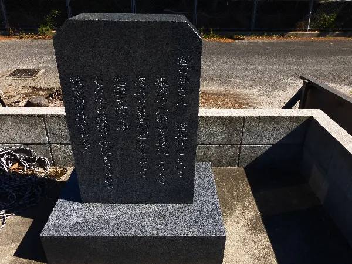
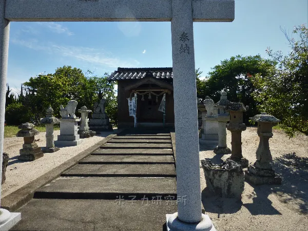
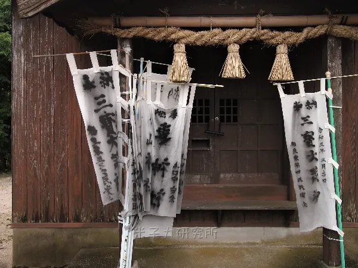
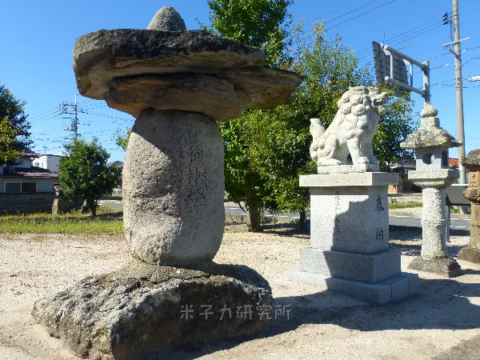
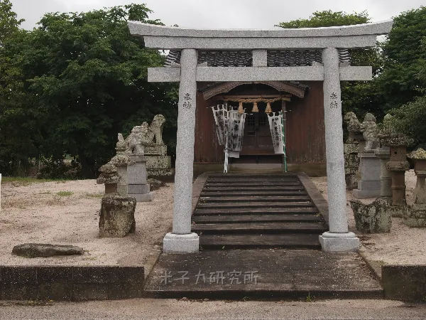

米子市上福原のサイノカミ
上福原神社の「妻神」
最終更新：
米子市上福原（かみふくばら）の上福原神社にはサイノカミさんがありました。
昭和56年頃調査の時点で自然石のサイノカミがあり、婦人会で「佐斐神神社の幟旗」を立てたそうです。
令和5年現在、自然石はおそらく失われていますが「妻神社の幟旗」が奉納してありますので、ご祭神としてお祀りされているらしい事がわかります。
行事については不明。

- 地域
- 鳥取県米子市
- 目印
- 上福原神社
- 対象
- 妻神
- 近隣のサイノカミ
- 新田神社の自然石
- 皆生八代荒神社の自然石
- 参考
- 石に刻まれた祈り2 No.06
- 案内板
上福原神社および福生の生い立ちについて
鳥居向かって右の案内板や境内の石版にいろいろ書いてありますので以下引用させていただきます。
特に案内板のほうは内容がとても充実しており、隣の八代荒神とともに同地区が歩んできた苦難の歴史、そしてなぜこれほどまで熱心に荒神を祀るのかが痛いほどに伝わってきます。
それではどうぞ。
賽の神さん 道祖神ともいう
集落の外部から侵入してくる疫病や災害などをもたらす悪霊を防ぐ神
そのため村境や辻にまつられる道案内の神でもある
境内案内板

2024-10-27 
2024-10-27 
2024-10-27
上福原神社
上福原の開拓が進み村として整いだすと、人々は心の拠り所・村の守護神として、荒神社を宝暦10年（1760）に建立しました。
場所は現在の福生中学校の敷地内でした。
昔は三宝荒神さんと呼ばれ、祭神は荒神とされ仏法僧の仏も守り、不浄を払う火と結びつけて竈の神とも言われています。
明治初期の神社制度の改革により名称は上福原神社となり祭神は素戔嗚尊（スサノウノミコト）とされていました。
これまでに2度の日野川の洪水に合い、明和6年（1769）現在地へ再建建立し現在に至っています。
出雲の日御碕神社、赤崎の船上神社から分霊を勧請し合祀されています。

2024-10-27 
2024-10-27 
2024-10-27 
2024-10-27
上福原神社と洪水
日野川の大きな洪水の記録は7回あり三宝荒神は2度も流されています。
そのため、洪水対策として、文政13年（1830）八代荒神から海まで川幅拡張工事を行っています。
また三宝荒神（注：ここ）と八代荒神の間には土手があり村へ浸水を防ぐ荒神さん土手と言われていたが、今は道路になっています。
福生東伝統行事 くちなわ神事
大雨の続くある年に、洪水で日野川の土手が崩れそうになると、どこからともなく大きなヘビが現れ、土手に横たわり土手の切れるのを防いだと伝えられています。
村人は、その恩に感じ、わらヘビを作り、洪水のない年が千年も万年も続くように亀を従えるようになりました。
福生の生い立ち
福生地区は、日野川が1000年余りの長い間山から流し続けた砂がたまって出来た土地と言われ、当時は人が住まず、小さな松がまばらに生えている、荒れ地でした。
約450年ほど前の天正10年頃に、戦いに敗れた八幡新兵衛がこの地を開拓し、海池（かいけ）村と名乗り、またそれから50年ほど遅れて数人の浪人も開拓に参加しましたが、後に海池村から分かれて上福原を作りました。
入植者は、農業や漁業を営みながら発展を続け、福生の基となりました。
幕末に海池を皆生と地名を改め、明治22年に、皆生と上福原が合併し福生村となります。
明治25年に小学校を作り、明治33年には温泉が発見され、ますます発展しました。
昭和13年に米子市へ合併し戦中戦後を経て高度経済期を迎え、道路などの整備各地の土地区画整理事業を行い、今の姿となりました。
平成24年10月吉日
福生地区記念誌作成実行委員会設置案内板